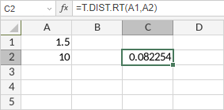

T.DIST.RT Funkcija
T.DIST.RT funkcija je jedna od statističkih funkcija. Vraća desnu Studentovu t-distribuciju. T-distribucija se koristi u testiranju hipoteza kod malih uzoraka podataka. Koristite ovu funkciju umesto tabele kritičnih vrednosti t-distribucije.
Sintaksa
T.DIST.RT(x, deg_freedom)
T.DIST.RT funkcija ima sledeće argumente:
| Argument | Opis |
|---|---|
| x | Vrednost za koju funkcija treba da se izračuna. |
| deg_freedom | Broj stepeni slobode, ceo broj veći ili jednak 1. |
Napomene
Kako primeniti T.DIST.RT funkciju.
Primeri
Slika ispod prikazuje rezultat koji vraća T.DIST.RT funkcija.
